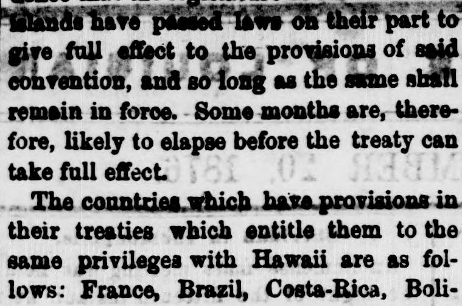
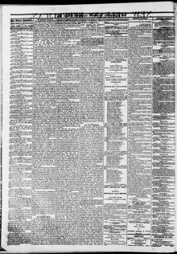

Some months are, there fore, likely to elapse before the treatyEs probable, por lo tanto, que transcurran algunos meses antes de que el tratado
New Orleans Republican. New Orleans, La, September 20, 1876. Page 2. View the originalVer el original


See the full pageVer la página completaThe New Orleans Republican reported in September 1876 that France, Brazil, Costa Rica, Bolivia, the Dominican Republic, Ecuador, Guatemala, Hayti, Honduras, New Granada, Nicaragua, Paraguay, Peru, San Salvador, Venezuela, and Italy held treaties entitling them to the same commercial and navigation privileges as Hawaii under mutual favored-nation clauses. A congressional memorial presented in May by the Louisiana, South Carolina, and Georgia delegations noted that these countries produce sugar and, in eight cases, rice, which they could demand to enter duty-free. Additionally, the committee warned that the treaty would unfairly favor San Francisco over Atlantic ports due to significantly lower freight rates.El New Orleans Republican consignó en septiembre de 1876 que Francia, Brasil, Costa Rica, Bolivia, la República Dominicana, Ecuador, Guatemala, Haití, Honduras, Nueva Granada, Nicaragua, Paraguay, Perú, San Salvador, Venezuela e Italia mantenían tratados que les conferían iguales prerrogativas comerciales y de navegación que a Hawái bajo cláusulas mutuas de nación más favorecida. Un memorial elevado al Congreso en mayo por las delegaciones de Luisiana, Carolina del Sur y Georgia advertía de que estos países producían azúcar y, en ocho de ellos, arroz, cuya entrada libre de derechos podían exigir. Asimismo, la comisión alertó de que el tratado beneficiaría injustamente a San Francisco respecto a los puertos del Atlántico debido a fletes ostensiblemente más reducidos.
FULL TEXT:TEXTO COMPLETO:
The countries which have provisions in their treaties which entitle them to the same privileges with Hawaii are as follows: France, Brazil, Costa-Rica, Bolivia, Dominican Republic, Ecuador, Guatemala, Hayti, Honduras, New Granada, Nicaragua, Paraguay, Peru, San Salvador, Venezuela and Italy.Los países que tienen disposiciones en sus tratados que los facultan a los mismos privilegios con Hawái son los siguientes: Francia, Brasil, Costa Rica, Bolivia, República Dominicana, Ecuador, Guatemala, Haití, Honduras, Nueva Granada, Nicaragua, Paraguay, Perú, San Salvador, Venezuela e Italia.
Each has the clause: “The United States and * engage mutually not to grant any particular favor to other nations in respect to commerce and navigation which shall not immediately become common to the other party, who shall enjoy the same freely if the concession was freely made, or on allowing the same compensation if the concession was conditional.”Cada uno tiene la cláusula: «Los Estados Unidos y * se comprometen mutuamente a no conceder favor particular alguno a otras naciones en cuanto a comercio y navegación que no se haga inmediatamente común a la otra parte, quien disfrutará del mismo libremente si la concesión fue hecha libremente, o permitiendo la misma compensación si la concesión fue condicional.»
The memorial presented to Congress by the Louisiana, South Carolina and Georgia delegations in May last set forth that each of the above countries produces sugar as a prominent product, and eight of them produce rice, both of which articles they would be entitled to demand should be entered free on the same terms as Hawaii.El memorial presentado al Congreso por las delegaciones de Luisiana, Carolina del Sur y Georgia en mayo pasado estableció que cada uno de los países anteriores produce azúcar como un producto prominente, y ocho de ellos producen arroz, ambos artículos que tendrían derecho a demandar que sean introducidos libres en los mismos términos que Hawái.